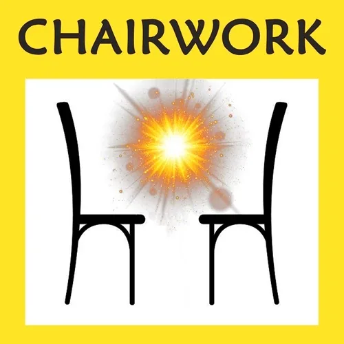

CHAIRWORK
CHAIRWORK

- What Is Chairwork? - Context And Processes In Chairwork
 - Chairwork Experiments
- Chairwork Experiments - Matrix CodeCHAIRWOR- .01 - Matrix CodeCHAIRWOR- .01 - Matrix CodeCHAIRWOR- .01 - Matrix CodeCHAIRWOR- .01 - Matrix CodeCHAIRWOR- .01 - Matrix CodeCHAIRWOR- .01
- NOTE:This website is a- Bubble in the Bubble Mapof the free-to-play massively-multiplayer online-and-offline matrix-building thoughtware-upgrade context-shift personal-transformation game called- StartOver.xyz, powered by- Possibility Management. It is a- doorwayto- experimentsthat- upgrade your thoughtwareso you can- createmore- possibility. Your knowledge is what you think- about. Your- thoughtwareis what you use to think- with. When you- change your thoughtware, you go through a- liquid stateas your mind reorganizes itself. Liquid states can bring up transformational- feelingsand- emotions. By- upgrading your thoughtwareyou- build matrixto hold more- consciousness (archived — not captured). No one can do this for you. No one can stop you from doing it. Our theory is that when we- collectively buildone million more Matrix Points we will change the- morphogenetic fieldof the human race for the better. Please choose- responsiblyto read this website. Reading this whole website is worth 1 Matrix Point. Doing any of the experiments earns you additional Matrix Points. Please use Matrix Code- CHAIRWOR.00to log your Matrix Points at- https://login.startover.xyz/. Thank you for playing full out!
- Matrix CodeCHAIRWOR- .01 - Matrix CodeCHAIRWOR- .01 - Matrix CodeCHAIRWOR- .01 - Matrix CodeCHAIRWOR- .01 - Matrix CodeCHAIRWOR- .01 - Matrix CodeCHAIRWOR- .01
- NOTE:This website is a- Bubble in the Bubble Mapof the free-to-play massively-multiplayer online-and-offline matrix-building thoughtware-upgrade context-shift personal-transformation game called- StartOver.xyz, powered by- Possibility Management. It is a- doorwayto- experimentsthat- upgrade your thoughtwareso you can- createmore- possibility. Your knowledge is what you think- about. Your- thoughtwareis what you use to think- with. When you- change your thoughtware, you go through a- liquid stateas your mind reorganizes itself. Liquid states can bring up transformational- feelingsand- emotions. By- upgrading your thoughtwareyou- build matrixto hold more- consciousness (archived — not captured). No one can do this for you. No one can stop you from doing it. Our theory is that when we- collectively buildone million more Matrix Points we will change the- morphogenetic fieldof the human race for the better. Please choose- responsiblyto read this website. Reading this whole website is worth 1 Matrix Point. Doing any of the experiments earns you additional Matrix Points. Please use Matrix Code- CHAIRWOR.00to log your Matrix Points at- https://login.startover.xyz/. Thank you for playing full out!